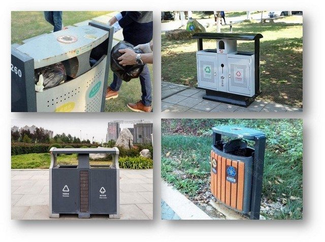
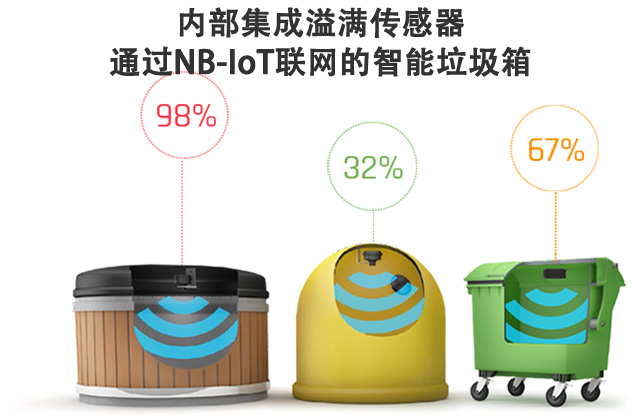
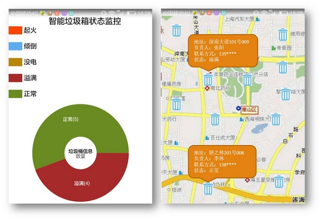

城市垃圾箱、果皮箱满溢程度监测
概述
《深圳市公共区域环境卫生质量和管理要求》规定：特级保洁道路、一级保洁道路废物箱按间隔25米-50米设置，二、三级保洁级道路按间隔50米-100米设置，四级保洁道路根据实际情况设置。果皮箱安装摆放的距离的大小按照市政道路等级标准，并结合考虑每条路段(区域)人流量的大小实际情况进行综合确定。

福田区果皮箱大概5000个左右，智慧垃圾箱作为智慧城市的子系统可极大提升果皮箱管理的效率，通过传感器对果皮箱的满溢和火灾隐情及时监测及时发现。
设计目标
- 提升良好的城市环境，提高市民满意度。
- 提升工作效率，提高管理效率。
- 及时监测火灾隐情，提升公共安全。
- 大数据分析，分析各街道和时间段垃圾产生数量，合理进行果皮箱的间隔和数量的调控。
工作原理
通过安装在每个分类桶的探测器，实时获取垃圾满溢和火灾隐患信息，该探测器每间隔5秒通过超声和红外探头检测一次垃圾桶状态的变化，如果垃圾桶状态发生变化，则立即发送信号到管理后台，同时环卫工人和管理人员手机端APP同时收到信息。
系统组成，包含了垃圾箱/果皮箱的探测器（NB-IoT），云端后台软件，管理人员手机端APP。

安装位置在垃圾箱/果皮箱正上方的盖板，安装方式可以为螺丝固定、粘贴或强磁。
主要功能

1、实时监控果皮箱状态
系统可以实时显示果皮箱满溢情况，统计福田区果皮箱满溢数、统计各时间段内各街道果皮箱满溢情况，方便管理人员对果皮箱的监控及管理。
2、统计功能
能够统计福田区果皮箱每天和每月各个地段和时间节点果皮箱的使用率。
3、监测功能
管理人员可以在控制室随时了解福田区果皮箱的分布情况和满溢情况，大数据分析可在垃圾产生的高峰时间和高峰路段进行调配和管理。
4、权限控制功能
多级权限控制功能，方便对相关信息的控制和保密。
（略）
（略）